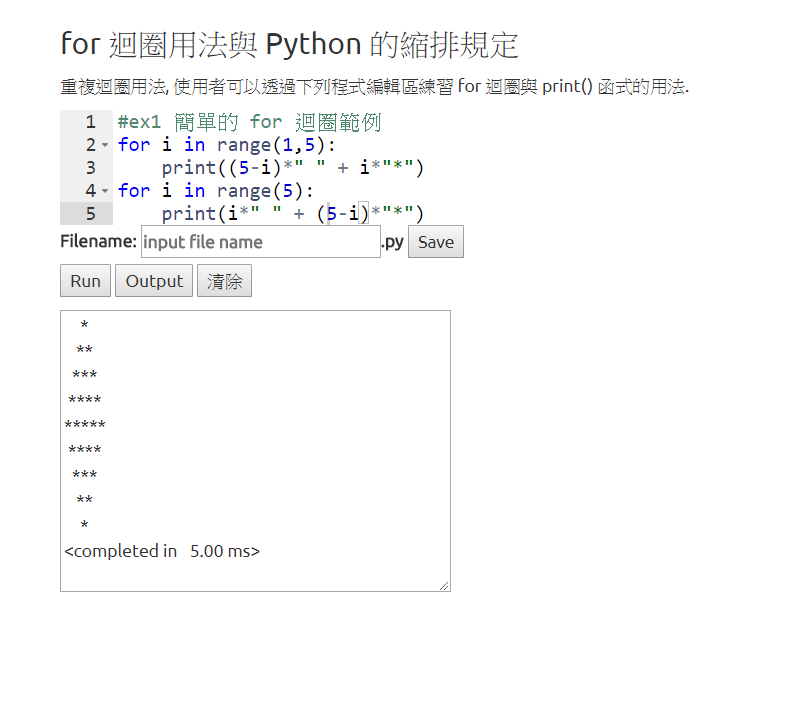
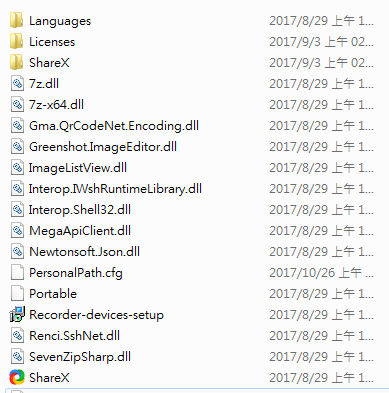

<!doctype html>
<html lang="en">
<head>
    <meta charset="utf-8">
<title>
2017 Spring 機械設計工程系網際內容管理
</title>
    <meta name="description" content="A framework for easily creating beautiful presentations using HTML">
    <meta name="author" content="Hakim El Hattab">
    
    <meta name="apple-mobile-web-app-capable" content="yes">
    <meta name="apple-mobile-web-app-status-bar-style" content="black-translucent">
    
    <meta name="viewport" content="width=device-width, initial-scale=1.0, maximum-scale=1.0, user-scalable=no">
    
    <link rel="stylesheet" href="data/reveal/reveal.css">
    <link rel="stylesheet" href="data/reveal/black.css" id="theme">
    
    <!-- Theme used for syntax highlighting of code -->
    <link rel="stylesheet" href="data/reveal/zenburn.css">

    <!-- Printing and PDF exports -->
    <script>
        var link = document.createElement( 'link' );
        link.rel = 'stylesheet';
        link.type = 'text/css';
        link.href = window.location.search.match( /print-pdf/gi ) ? 'data/reveal/pdf.css' : 'data/reveal/paper.css';
        document.getElementsByTagName( 'head' )[0].appendChild( link );
    </script>

    <!--[if lt IE 9]>
    <script src="data/reveal/html5shiv.js"></script>
    <![endif]-->
</head>

<body>
<div class="reveal">
<!-- Any section element inside of this container is displayed as a slide -->
<div class="slides">
<section data-markdown>
    <script type="text/template">
## 2017Fall CADP 與 CP

### 虎科大機械設計工程系

<small>
Created by [KMOLab](http://kmolab.github.io/blog/)
</small>

[40623146 CP 課程網誌](blog/index.html)


    </script>
</section>


						
<section>
<section data-markdown>
    <script type="text/template">
# W1-W3

* 準備筆記本、隨身碟與耳機
* 充分了解隨身系統的啟動關機與使用
* 先在近端運作, 然後同桌電腦, 最後區網與雲端
* 了解機械設計本質, 六種表達與如何培養創造力
* 要怎麼收穫, 就那麼栽, 沒有捷徑, 真的沒有捷徑
* 每天紀錄, 自己如何過完人生中這個寶貴的一天

    </script>
</section>
<section data-markdown>
    <script type="text/template">
# W1-W3

## 機 械 設 計
* 表達的六種方式: 口語、文字 圖表2D、影像3D 量化、實體 創造力: 自學力、執行力、想像力

## 隨身系統指令
* mkdir - 建立檔案資料夾
* cd .. - 前往上一層資料夾
* cd fossil - 進入檔案名稱為fossil之資料夾
* clone - 複製網頁
* status - 檢查資料
* add . - 認所有資料
* commit -m " " - 推送資料到遠端
    </script>
</section>
</section>
<section data-markdown>
    <script type="text/template">
# 隨身碟內容介紹

* Windows 64 位元電腦專用
* 可以在電腦間遊走, 擁有統一的近端操作環境
* USB 碟遊走各電腦, 要小心散播病毒
* 玩線上遊戲, 但不要玩到 USB 中毒
* 打開 c:\mde\python2017fall_36 目錄, 從 start.bat 開始
* Python, C/C++, Fossil SCM, Git, Solvespace, V-rep, Blender
* 夠您玩兩年了

    </script>
</section>


						
<section>
    <section data-markdown>
        <script type="text/template">
    # W4-W6

    ## 學習內容
    * 網誌維護
    * 新增網誌
    * 修改網誌
    * 大致了解eric6及Python3使用方法
        </script>
    </section>


    						
    <section data-markdown>
        <script type="text/template">
    ## 如何撰寫新增及管理網誌

     先上倉儲clone檔案，再開啟檔案利用Leo進行編輯修改 接著利用fossil status來檢查如果有顯示missing再用fossil deleterec或fossil addremove做修改 如果沒有錯誤則使用commit -m來推上去

        </script>
    </section>


    						
    <section data-markdown>
        <script type="text/template">
    ## 簡單的FOR迴圈利用案例

    
        </script>
    </section>


    						
</section>


						
<section>
    <section data-markdown>
        <script type="text/template">
    ## 學習內容
    * 使用ShareX來錄下如何更新網誌
    * 將影片上傳至Youtube及Viemo
    * 使用Eric6製作出計算機的雛形
    * W1-W9的筆記
        </script>
    </section>


    						
    <section data-markdown>
        <script type="text/template">
    ## 如何使用ShareX來錄

     * 點選ShareX

    * 按Shift+Prtsc 就會開始錄影了,停止錄影就再按一次Shift+Prtsc

    
    ## 將影片上傳至Youtube及Viemo

    outube使用自己的學校GMAIL帳號上傳,上傳好後對自己的影片按右鍵 點選"複製嵌入程式碼"

    Viemo使用在自己上傳好的影片下方的Share,在Embed複製程式碼即可
        </script>
    </section>


    						
</section>


						
<section>
    <section data-markdown>
        <script type="text/template">
    # 課程評分

    * 出席: 20% 20分(全勤)
    * 平時表現: 30% 25分(有在努力)
    * 驗收考試: 30% 25分(拚到最後一刻)
    * 驗收簡報: 20% 0分(沒做出來)
        </script>
    </section>


    						
</section>


						
<section data-markdown>
    <script type="text/template">
# 投影片快捷鍵

* 利用箭頭上下前後換頁
* 按 f 鍵進入全螢幕模式 (full screen)
* 按 s 鍵可以顯示投影片筆記 (show)
* 按 o 鍵可以切換單張或全域檢視 (overview)
* 按 b 或 . 鍵可以切換螢幕黑屏 (black)
* 按 Esc 可以退出全螢幕或全域檢視 (Escape)

    </script>
</section>


						
<section>
<section data-markdown>
    <script type="text/template">
<!-- 請注意, @others 不可以內縮 -->
# 數學符號與方程式

Inline math equations go in like so: $\omega = d\phi / dt$. Display
math should get its own line and be put in in double-dollarsigns:

$$I = \int \rho R^{2} dV$$
    </script>
</section>


						
<section data-markdown>
    <script type="text/template">
<!-- 請注意, @others 不可以內縮 -->
## 利用 Markdown 寫投影片
以下利用 Markdown 格式展示 Python 程式碼:
```
# use threading and subprocess to threading the make process
import os
import subprocess
import threading

def domake():
    
    path = "../exposed/api/exposed"
    ubuntu = "../Ubuntu"
    
    # create obj path
    
    if not os.path.exists(path+"/../obj"):
        os.makedirs(path+"/../obj")
    
    subprocess.call(["make", "clean"], cwd=path)
    subprocess.call("make", cwd=path)
    subprocess.call(["cp", "{libslvs.so, _slvs.so, slvs.py}", ubuntu], cwd=path)
    subprocess.call(["python3", "circle_ex.py"], cwd=path+"/"+ubuntu)
    
make = threading.Thread(target=domake)
make.start()
```
    </script>
</section>


						
<section data-markdown>
    <script type="text/template">
## 使用 iframe 導入影片

### 導入影片 template

<iframe src="https://player.vimeo.com/video/183950627" width="640" height="492" frameborder="0" webkitallowfullscreen mozallowfullscreen allowfullscreen></iframe>
    </script>
</section>


						
</section>
<section>
<section data-markdown>
    <script type="text/template">
<!-- 請注意, @others 不可以內縮 -->
## 心得
很開心能在最後關頭做出來，在這幾周來其實走得很不順，先是一開無法上傳網址(解決方發，忘記存檔，存檔後即可)後來則是出現大量的MISS刪完整個網頁消失，(解決辦法，下載之前的版本，並用 fossil addremove除錯後再上傳)，而這些問題也是靠問他人才解決的，自己會的真的很少，不過這也讓我知道人是需要互相扶持的，希望未來我也能誠為幫助他人的人。
    </script>
</section>


						
</section>
</div>

</div>

<script src="data/reveal/head.min.js"></script>
<script src="data/reveal/reveal.js"></script>
<script>
        // More info https://github.com/hakimel/reveal.js#configuration
        Reveal.initialize({
            controls: true,
            progress: true,
            history: true,
            center: true,

            transition: 'slide', // none/fade/slide/convex/concave/zoom

            // More info https://github.com/hakimel/reveal.js#dependencies
            dependencies: [
                { src: 'data/reveal/classList.js', condition: function() { return !document.body.classList; } },
                { src: 'data/reveal/marked.js', condition: function() { return !!document.querySelector( '[data-markdown]' ); } },
                { src: 'data/reveal/markdown.js', condition: function() { return !!document.querySelector( '[data-markdown]' ); } },
                { src: 'data/reveal/highlight.js', async: true, callback: function() { hljs.initHighlightingOnLoad(); } },
                { src: 'data/reveal/zoom.js', async: true },
                { src: 'data/reveal/notes.js', async: true },
                { src: 'data/reveal/math.js', async: true }
            ]
        });
</script>
</body>
</html>

